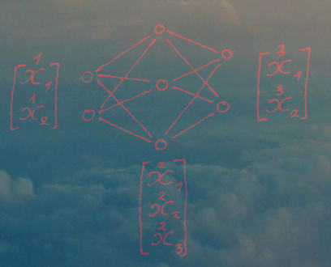
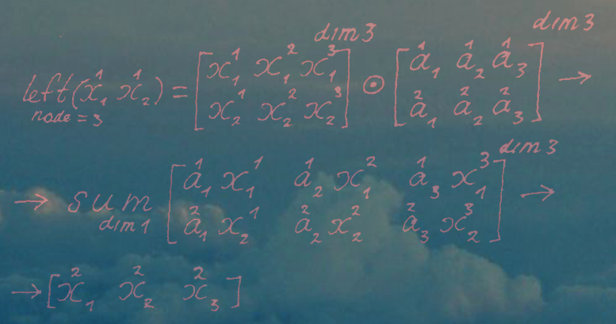
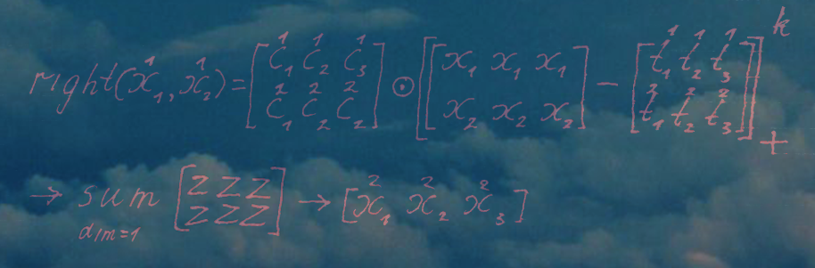
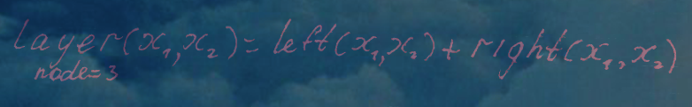

Не стоит относится к этому тексту серьёзно, это лишь смутное размышление на будущее.
TruKAN это последняя модификация идеи сетей Колмогорова-Арнольда на конец 2026 года. И судя по тестам, она уже доказала своё превосходство над классическим MLP, исследователи смогли решить проблему оптимизации, получившаяся сеть хорошо раскладывается на матрицы, занимая в GPU меньше места, при больших апроксимационных спосбностях.
Однако, в своей статье авторы не уделили внимание устройству матричных операций.
В ней есть лишь формула:
Эта формула устроена примерно так же как и типичное ребро в оригинальной реализации KAN. Вместо части с GelU используется степенной полином, он так же как и GeLU позволяет сохранять градиент при выходе за область определения сплайна, однако имеет значительно больше гибкости, дополнительно усиливая способности к аппроксимации.
В место части с b-сплайном используется сплайн на усечённых (TRUncated) функциях, в данном случае символ плюс под скобками означает функцию max(x,0), или другими словами аналог ReLU.
Как упоминалось выше, авторы не поднимали в своих работах вопрос о том как представить TruKAN в матричной форме.
Однако, прошлым утром я смог сделать пару предположений. Разобъём формулу на две части левую и правую, т.е. полиномиальную и сплайновую.
Несколько странно, что в университете не уделили внимание поэлементному умножению матриц. Это значительно более простая операция нежели матричное умножение и довольно полезная.

В самом верху страницы я поместил графическое представление сети, которую мы будем использовать для примера. Как видно на рисунке, полином легко разбивается на две матрицы, ширина, которых будет расти в зависимости от выбранной степени полинома. А их высота будет зависеть от числа рёбер ведущих в один узел следующего слоя. А чтобы найти значения для других узлов матрице стоит добавить дополнительное измерение, длина которого будет равна числу узлов скрытого слоя. т.е. мы имеем уже дело с тензором, что в формулах обозначено через dim3.
После поэлементного умножения мы получаем тензор, состоящий из двухмерных матриц, которые представляют из себя значения полиномов для конкретного узла. Если мы отдельно сложим все значения в каждой из этих матриц, то у нас получится вектор значений скрытого слоя. В формулах это обозначено операцией sum_dim=1, сложить все значения по 2-м осям, кроме 3-ей. (Вероятно мне стоило написать dim2, а не dim1, подобные матричные операции для меня ещё в новинку)
Теперь переходим к правой части:

Здесь ситуация схожа, только формула выходит чуть сложнее.
В конце концов нам остаётся только сложить правую и левую часть, а затем повторить те же самые операции для следующих слоёв.

Однако это лишь догадки, в будущем я постараюсь подкрепить их, посредством анализа кода прототипа от создателей TruKAN.